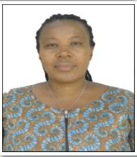
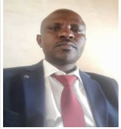
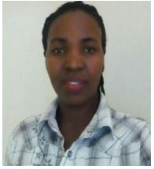
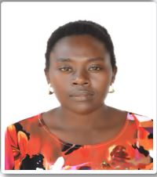

Our Staff & Board
Meet the dedicated team behind Green for Life Rwanda — experienced professionals working to conserve the environment and empower communities across Rwanda.
The People Behind Our Work
Green for Life Rwanda is driven by a committed team of professionals with deep experience in rural development, agroforestry, environmental conservation, finance, and community empowerment. Together, we work to make lasting environmental and social change across Rwanda.

Meet Our Team

Pacifique Nishimwe
Co-Founder
Pacifique is an experienced professional in rural development, specializing in promoting agroforestry practices to enhance sustainable livelihoods. With a focus on environmental conservation and community empowerment, Pacifique supports small farmers in adopting agroforestry techniques that improve food security, restore ecosystems, and boost income generation, fostering resilience in rural communities.

Speciose Mujawamariya
Program Manager
Mujawamariya Speciose has more than 10 years in rural development and worked at Vi Agroforestry as Field Officer in agroforestry promotion in Rusororo, Gasabo District.

Juvens Twizeyemungu
Monitoring & Evaluation Officer
Twizeyemungu Juvens has more than 10 years in planning, monitoring, and evaluation from different institutions.
Sarah Gwira
Finance & Administration Officer
Sarah has more than 3 years experience in finance and administration and holds a Master's degree in Development Studies.

Anastasie Nyiramugisha
Field Officer
Anastasie Nyiramugisha has more than 5 years experience in rural development, working directly with communities on environmental and agricultural programs.

Eugenie Mukarukundo
Conflict Resolution Committee
Mukarukundo Eugenie has more than 8 years of experience in agroforestry practices, contributing to community resilience and sustainable land management.
Join Our Team
Green for Life Rwanda is always looking for passionate individuals who share our commitment to environmental conservation and community empowerment. If you are interested in volunteering, internships, or future employment opportunities, we would love to hear from you.